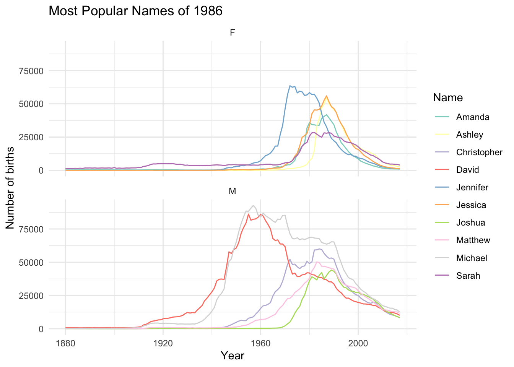
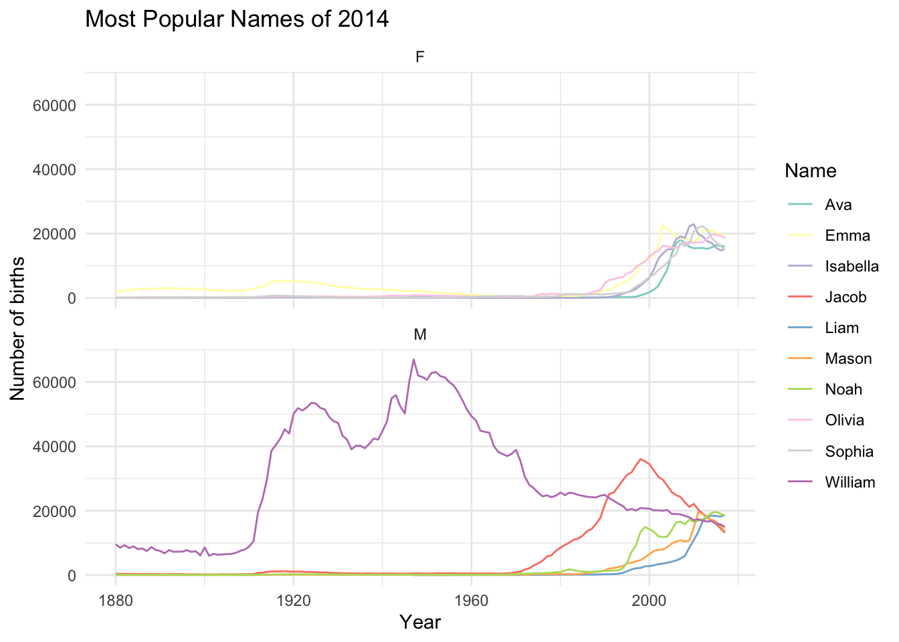
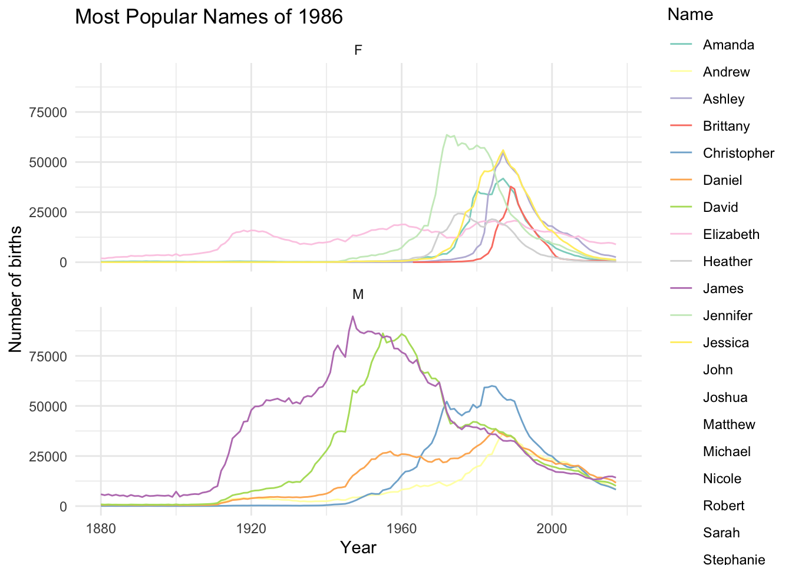

library(tidyverse)
library(babynames)AE 13: Debugging R code
Packages
We will use the following packages in this application exercise.
- tidyverse: For data import, wrangling, and visualization.
- babynames: For working with the Social Security Administration’s baby names data.
Popular baby names
The Social Security Administration maintains detailed historic records on every child born in the United States dating back to 1880.1 The data is published annually at the national and state-levels, and includes every name excluding those with fewer than 5 occurrences. The babynames package provides a convenient interface to this data. 2
The instructor has written code to analyze the popularity of baby names in the United States. Alas, the code is not working correctly. Your task is to debug the code and fix any issues. Pay attention to any errors, warnings, or messages generated by the code. It is possible for the code to run without any notification from R, but still produce incorrect output.
Write a function to show trends over time for specific name
Your turn: Copy the reprex from the course discussion board. Turn this into clean code using reprex::reprex_clean() and add it to the code chunk below. Then debug the code, fix any issues, and post the corrected code on the discussion board using a reprex.
# add code here
library(tidyverse)
library(babynames)
name_trend <- function(person_name) {
babynames |>
filter(name == person_name) |>
ggplot(mapping = aes(x = year, y = n, color = sex)) +
geom_line() +
scale_color_brewer(type = "qual") +
labs(
title = str_glue("Name: {person_name}"),
x = "Year",
y = "Number of births",
color = NULL
) +
theme_minimal()
}
name_trend("Benjamin")
#> Error in name_trend("Benjamin"): object 'Name' not foundCompare naming trends to Disney princesses around film release years
Your turn: Fix the code below to show the popularity over time of baby names that are shared with Disney princesses.
# create data frame of disney princess films
disney <- tribble(
~princess, ~film, ~release_year,
"Snow White", "Snow White and the Seven Dwarfs", 1937,
"Cinderella", "Cinderella", 1950,
"Aurora", "Sleeping Beauty", 1959,
"Ariel", "The Little Mermaid", 1989,
"Belle", "Beauty and the Beast", 1991,
"Jasmine", "Aladdin", 1992,
"Pocahontas", "Pocahontas", 1995,
"Mulan", "Mulan", 1998,
"Tiana", "The Princess and the Frog", 2009,
"Rapunzel", "Tangled", 2010,
"Merida", "Brave", 2012,
"Elsa", "Frozen", 2013,
"Moana", "Moana", 2016,
"Raya", "Raya and the Last Dragon", 2021
)
# join together the data frames
babynames |>
# ignore men named after princesses - is this fair?
filter(sex == "F") |>
inner_join(disney, by = c("name" = "princess")) |>
mutate(name = fct_reorder(.f = name, .x = release_year)) |>
# plot the trends over time, indicating release year
ggplot(mapping = aes(x = year, y = n)) +
facet_wrap(facets = vars(name, film), scales = "free_y", labeller = label_both) +
geom_line() +
geom_vline(mapping = aes(xintercept = release_year), linetype = 2, alpha = .5) +
scale_x_continuous(breaks = c(1880, 1940, 2000)) +
theme_minimal() +
labs(title = "Popularity of Disney princess names",
x = "Year",
y = "Number of births")
Write a function to show trends over time for the top N names in a specific year
Your turn: Modify the function so that if n_rank is greater than 6, it is capped at 6 and a message is displayed alerting the user to this change.
top_n_trend <- function(n_year, n_rank = 5) {
if (n_rank > 6) {
n_rank <- 6
message("The n_rank is greater than 6, so it has been capped at 6.")
}
# create lookup table
top_names <- babynames |>
summarize(count = as.numeric(sum(n)), .by = c(name, sex)) |>
filter(count > 1000) |>
select(name, sex)
# filter babynames for top_names
filtered_names <- babynames |>
inner_join(top_names, by = join_by(sex, name))
# get the top N names from n_year
top_names <- filtered_names |>
filter(year == n_year) |>
summarize(count = sum(n), .by = c(name, sex)) |>
group_by(sex) |>
mutate(rank = min_rank(desc(count))) |>
filter(rank <= n_rank) |>
arrange(sex, rank) |>
select(name, sex, rank)
# keep just the top N names over time and plot
filtered_names |>
inner_join(select(top_names, sex, name), by = join_by(sex, name)) |>
ggplot(mapping = aes(x = year, y = n, color = name)) +
facet_wrap(facets = vars(sex), ncol = 1) +
geom_line() +
scale_color_brewer(type = "qual", palette = "Set3") +
labs(
title = str_glue("Most Popular Names of {n_year}"),
x = "Year",
y = "Number of births",
color = "Name"
) +
theme_minimal()
}
top_n_trend(n_year = 1986)
top_n_trend(n_year = 2014)
top_n_trend(n_year = 1986, n_rank = 10)The n_rank is greater than 6, so it has been capped at 6.
Footnotes
The package is no longer actively maintained. We will use a forked version of the package which has been submitted as a pending pull request.↩︎